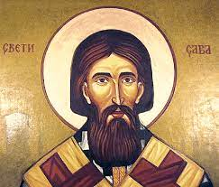

Sveti Sava
Sveti Sava, rođen kao Rastko Nemanjić, je raški plemić,
svetogorski monah, iguman manastira Studenica, prosvetitelj,
književnik, diplomata i prvi arhiepiskop autokefalne
Srpske pravoslavne crkve. Smatra se jednom od najznačajnijih
ličnosti srpske istorije i osnivačem srpske crkve koja ga slavi
kao sveca. Rođen je između 1169. i 1175. godine u mestu
Ras koje se nalazi u blizini Novog Pazara, a preminuo
je 12. ili 14. januara 1236. godine (po julijanskom kalendaru)
u Trnovu, u Bugarskom carstvu, pri povratku sa hodočašća u
Jerusalimu.
Rastko je bio najmlađi sin velikog župana Stefana Nemanje i
plemkinje Ane Nemanjić o čijem poreklu se ne zna mnogo.
Imao je dva brata: Stefana i Vukana i tri sestre: Jefimiju koja
je bila udata za vladara Soluna, Elenu koja je bila udata za
bugarskog kralja Ivana Asena i nepoznatu sestru koja je rodila
bugarskog cara Konstantina I.

Ana i Nemanja su željno iščekivali treće dete zbog čega im j
e Rastko bio veoma drag. Kada je imao 15 godina, otac mu je
poverio oblast Zahumlje da njime upravlja. Stekao je solidno
obrazovanje čitajući crkvene knjige. Dve godine kasnije,
roditelji su hteli da ga ožene, ali Rastko je imao drugačije
planove. Mnogo je razmišljao o Bogu i upoznao je kaluđere koji
su mu pričali o životu u Svetoj Gori.
Pitao je oca da ode u lov na jelene, ali umesto toga, sa duhovnikom i
nekoliko vernih sluga je pobegao na Aton. Kada su shvatili da ga nema,
svi na dvoru su bili veoma zabrinuti. Stefan Nemanja je posumnjao da je
pobegao sa Svetogorcem zbog čega je poslao vojvodu i vojnike da mu
vrate sina. Međutim, neki smatraju da se iza ovog Rastkovog čina kriju
racionalni politički razlozi čiji je cilj bio stvaranje samostalne srpske crkve
kao stuba srpske države i dinastije Nemanjića.
Pronašli su ga u ruskom manastiru Svetog Pantelejmona i on se, samo
naizgled, pokorio vojvodinoj naredbi da krene sa njima. Rekao je da im
se spremi bogata večera nakon koje su zaspali. Rastko je to iskoristio
i sa jednim duhovnikom je otišao na visoku manastirsku kulu gde mu je
kosa odsečena u obliku krsta i obučeno mu je kaluđersko odelo.
Pročitaj više na: https://www.biografija.org/knjizevnost/sveti-sava-rastko-nemanjic/